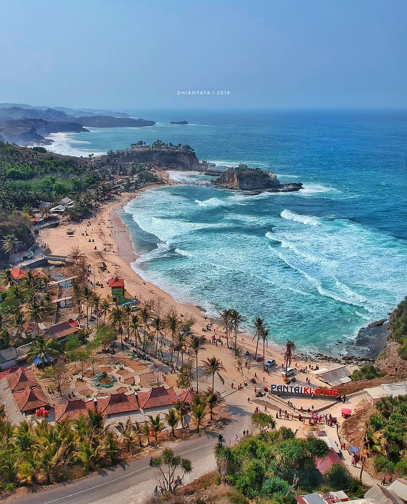
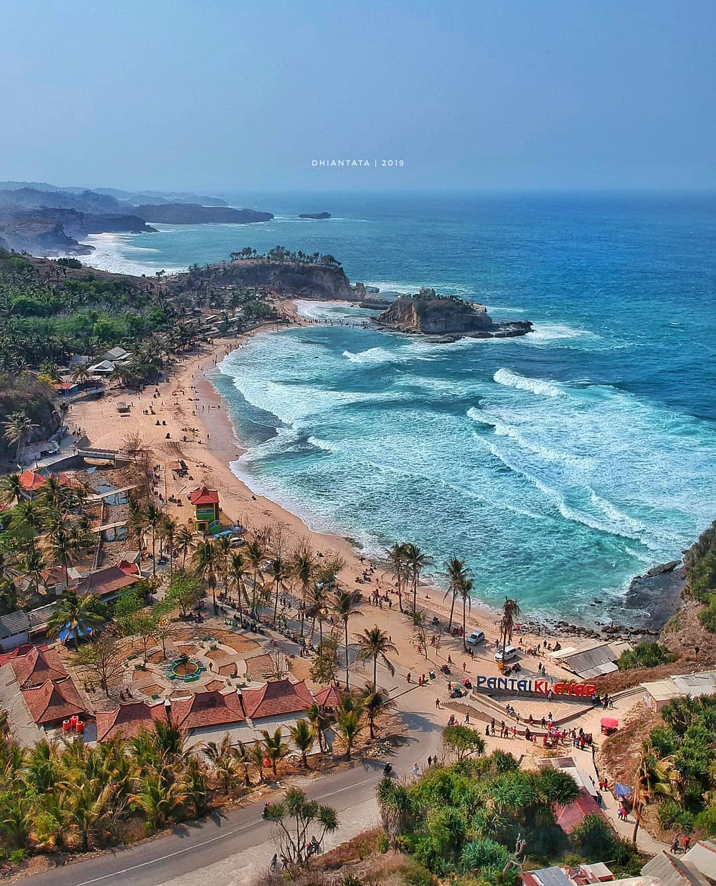

Selamat Datang di Jawa Timur
Temukan keindahan budaya, alam, dan sejarah dari provinsi dari yang kaya akan keindahan mulai dari Gunung Semeru hingga pantai selatan yang memukau.
Jawa Timur merupakan salah satu provinsi paling strategis di Indonesia, dengan Surabaya sebagai ibu kota dan pusat ekonomi utama di kawasan timur. Provinsi ini dikenal sebagai lumbung pangan dan industri, menyumbang porsi signifikan terhadap PDB nasional berkat sektor pertanian, manufaktur, dan perdagangan yang kuat, didukung oleh infrastruktur vital seperti Pelabuhan Tanjung Perak dan Bandara Internasional Juanda. Secara geografis, Jawa Timur memiliki keragaman yang luar biasa, mulai dari dataran rendah subur hingga kawasan pegunungan berapi aktif, menjadikannya rumah bagi destinasi wisata ikonis seperti Gunung Bromo dan kawah api biru Ijen. Keragaman ini juga tercermin dalam masyarakatnya, yang didominasi oleh Suku Jawa dan Suku Madura, melahirkan kekayaan budaya, bahasa, dan tradisi lokal yang unik.
Profil Singkat
Jawa Timur adalah provinsi bersejarah dengan pusat kebudayaan Majapahit. Kaya lanskap: gunung, dataran tinggi, dan pantai.
Luas wilayah: ±47.800 km² 29 kabupaten & 9 kota.
Budaya Daerah
Beragam tradisi, pakaian, tarian, musik, dan kuliner yang hidup dan masih dirayakan.
Rumah Adat
Joglo · Limasan · Osing


Joglo, limasan, dan rumah Osing memadukan filosofi ruang, ventilasi tropis, dan ukiran kayu.
Pakaian Tradisional
Kebaya · Beskap · Batik


Kebaya, beskap, dan batik Sidoarjo tampil dalam upacara resmi dan pernikahan adat.
Tarian & Musik
Reog · Remo · Gamelan


Reog Ponorogo, Tari Remo, dan ansambel gamelan menjadi identitas seni panggung Jawa Timur.
Makanan Khas
Rujak Cingur · Rawon · Sate Madura


Rawon dengan kluwek, rujak cingur, lontong balap, dan sate Madura menonjolkan cita rasa kuat.
Lagu & Sastra
Cublak-Cublak Suweng · Sound Horeg · Ludruk


Lagu Jula Juli, pantun Madura, dan serat Jawa diwariskan lewat pertunjukan dan pembacaan.
Pariwisata Destinasi Populer
Beberapa destinasi terbaik yang wajib dikunjungi lengkap dengan deskripsi singkat.
 



Gunung Bromo
Gunung Bromo adalah salah satu gunung berapi aktif paling terkenal di dunia dan merupakan bagian dari Taman Nasional Bromo Tengger Semeru. Keunikan utama Bromo adalah keberadaannya di tengah lautan pasir vulkanik yang luas, yang oleh penduduk setempat disebut "Segara Wedi" atau Lautan Pasir. Selain dikenal sebagai tempat terbaik untuk menyaksikan matahari terbit yang spektakuler, Bromo juga merupakan gunung suci bagi Suku Tengger.
Akses: Kecamatan Sukapura, Probolinggo.
Pantai Klayar (Pacitan)
Pantai Klayar yang terletak di Pacitan terkenal dengan formasi batu karang raksasa yang menawan, menjadikannya salah satu pantai tercantik di pesisir selatan Jawa. Keunikan paling menarik dari Pantai Klayar adalah fenomena alam yang disebut "Seruling Samudra". Fenomena ini terjadi ketika ombak menghantam celah sempit pada batu karang, mendorong air ke atas dan menghasilkan suara siulan yang indah, mirip seperti suara seruling.
Akses: Desa Sendang, Pacitan.
Air Terjun Tumpak Sewu (Lumajang)
Dijuluki sebagai "Niagara Mini" atau "Tebing Nirwana" di Indonesia, Air Terjun Tumpak Sewu menawarkan pemandangan yang megah dan berbeda. Keunikan air terjun ini terletak pada bentuknya yang menyerupai tirai air yang lebar, di mana aliran airnya yang sangat deras turun dari tebing melingkar setinggi sekitar 120 meter. Air terjun ini bukan hanya satu aliran, melainkan terdiri dari ribuan aliran kecil yang terlihat menyatu.
Akses: Desa Sidomulyo, Pronojiwo, Lumajang.
Batu Night Spectacular
Batu Night Spectacular merupakan salah satu destinasi wisata malam yang unik, terletak di Kota Batu (dekat Malang) dengan konsep pasar malam modern. Daya tarik utamanya adalah suasana malam yang fantastis dengan atraksi cahaya dan lampion yang spektakuler.
Akses: Kota Batu, Malang.
Geografi & Alam
Bentang Alam
Jawa Timur memiliki gunung berapi aktif (Semeru, Bromo), dataran tinggi, hutan, dan garis pantai panjang yang menciptakan ekosistem beragam.
Iklim
Tropis; musim hujan (Okt–Mar) dan kemarau (Apr–Sep). Suhu berkisar 22–34°C, bervariasi menurut ketinggian.
Flora & Fauna
banteng Jawa, lutung Jawa, anggrek, dan pohon jati.
Peta & Lokasi
Tips: klik + tahan pada peta atau gunakan Google Maps untuk rute detail ke destinasi seperti Bromo, Tumpak Sewu, atau Pantai Klayar.
Fakta Unik & Tradisi
Julukan
Bumi Majapahit merujuk pada kejayaan historis Kerajaan Majapahit...
Festival
Jember Fashion Carnaval, Festival Reog Ponorogo, Malang Flower Carnival.
Upacara Adat
Larung sesaji, sedekah laut, dan ritual panen masih dijalankan di beberapa komunitas pesisir dan agraris.
Hari Ulang Tahun
12 Oktober Hari Ulang Tahun Provinsi Jawa Timur.
Fakta Menarik
Gunung Semeru adalah titik tertinggi di Pulau Jawa (3.676 m).
Reog Ponorogo
Seni pertunjukan ikonik dari Jawa Timur yang berasal dari Kabupaten Ponorogo...